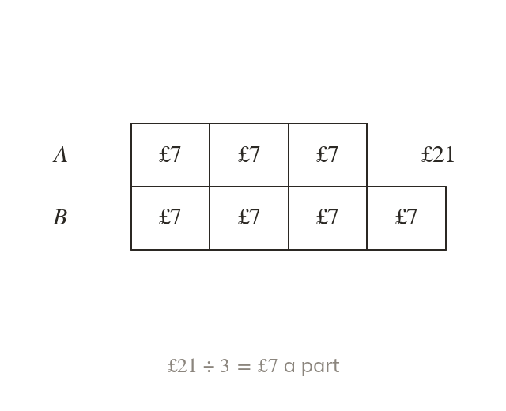

Starting from one share
One known share gives the value of one part. Divide it by that share's own number of parts.
Knowing the value of one share gives the value of one part, by dividing by that share's own number of parts. Every other share, and the total, then follow from that one part value.